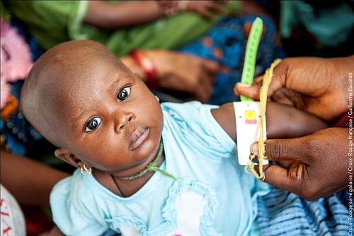
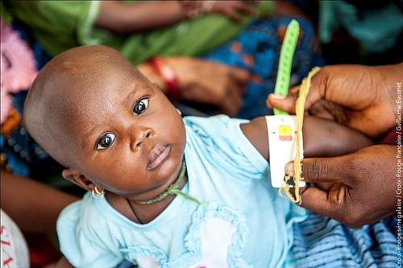
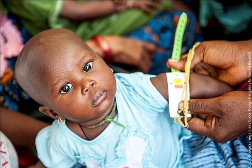

Le Sénégal est un pays passionnant. De Saint-Louis à Dakar, de Dakar à Ziguinchor, c’est une multitude de paysages de mer et de brousse, de savane sèche et de forêts au Sud. A Saint-Louis, l’histoire coloniale transpire par toutes les façades des maisons qui ont abrité la société saint-louisienne, composées de Noirs, de Blancs et de métis. A Dakar, c’est un mélange de riches demeures et de baraques de populations issues des migrations rurales. Gorée est l’île du souvenir, l’île du pardon et du non-oubli. L’esclavage en fait son renom.
1er cas : Awa Ndiaye est une mère de famille qui habite un quartier de Dakar nommé la Gueule Tapée. Son mari, handicapé pendant de nombreuses années, est mort récemment. Awa Ndiaye a sept ou huit enfants. Elle habite une baraque sans eau, où survivent une dizaine de familles. Elle achète chaque matin une dizaines de kilos de fruits au marché qu’elle revend au détail, assise devant un étal. Elle récolte ainsi 1 euros par jour, et fait vivre ses enfants de cette somme plus que dérisoire.
2eme cas : Mame Fatou Paye est une jeune femme d’une quarantaine d’années, qui a perdu son mari il y a deux ans, emporté par une crise d’asthme. Elle a 3 enfants scolarisés. Elle se retrouve sans revenus. Elle gère depuis plusieurs années une tontine de femmes du quartier. Le produit de cette tontine permet aux femmes d’améliorer les revenus de leur famille.
3eme cas : Marie Sène a perdu son mari et sa fille en 1999. Ses enfants sont obligés d’abandonner l’école et d’entrer en apprentissage (tailleur, maçon, ébéniste)… L’un deux est mort d’un accident de travail en 2004. La famille n’a pas été indemnisée. Ce décès a mis la famille dans une situation catastrophique. Marie ne peut plus assurer l’éducation des plus petits. Leur scolarité est compromise.
4eme : Ramata a 5 enfants. Elle a perdu son logement et tous ses biens dans un incendie qui avait dévasté le quartier de Fass paillote. Toutes les familles sinistrées ont été relogées dans des salles de classes de l’école Manguiers. A la rentrée des classes, ces familles ont été obligées de se débrouiller. Actuellement, Ramata a beaucoup de difficultés à payer le loyer d’une chambre à Ouagou Niayes. Elle est actuellement réduite à la mendicité pour nourrir ses enfants.
Toutes ces femmes pourraient bénéficier un fonds de départ (de l’ordre de 75 euros) pour démarrer une activité génératrice de revenus. Ce fonds de départ, remboursé, pourra aider d’autres femmes.

L’hôpital Albert Royer de Dakar est le seul hôpital spécialisé dans les pathologies pédiatriques. Il était il y a encore 10 ans financé par la coopération canadienne. Mais depuis le retrait du Canada, l’hôpital n’a plus les moyens de nourrir convenablement les petits malades...
A l’hôpital de Fann, des enfants, venus de l’extérieur du pays avec leurs mamans, sont nourris de riz cuit à l’eau sur lequel est posé un petit morceau de poisson séché. Le déficit en glucides, protides et vitamines ne favorisent pas leur rétablissement. Les mamans, souvent démunies, et ne connaissant personne à Dakar se contentent de cacahuètes grillées vendues 4 centimes d’euros à la porte de l’hôpital.
L’idée serait de cuisiner chez Maguette Samb, la maman de Diéo, qui habite à 500 m de là, des repas complets traditionnels, comme le tiéboudiène (riz au poisson avec tomate et légumes) ou le mafé (riz à la viande sauce arachide et légumes) dans des marmites géantes (disponibles) pour 100 à 200 personnes. Ces repas seraient servis à midi pour les enfants hospitalisés et leurs accompagnants. Les services sociaux de l’hôpital sont d’ores et déjà partie prenante pour lister les bénéficiaires.
Coût : 30 à 40 centimes d’euros par personnes, soit 60 à 80 euros par jour compter les rétributions des cuisinières (2 euros X 3 par jour) et du chauffeur (10 euros par semaine)